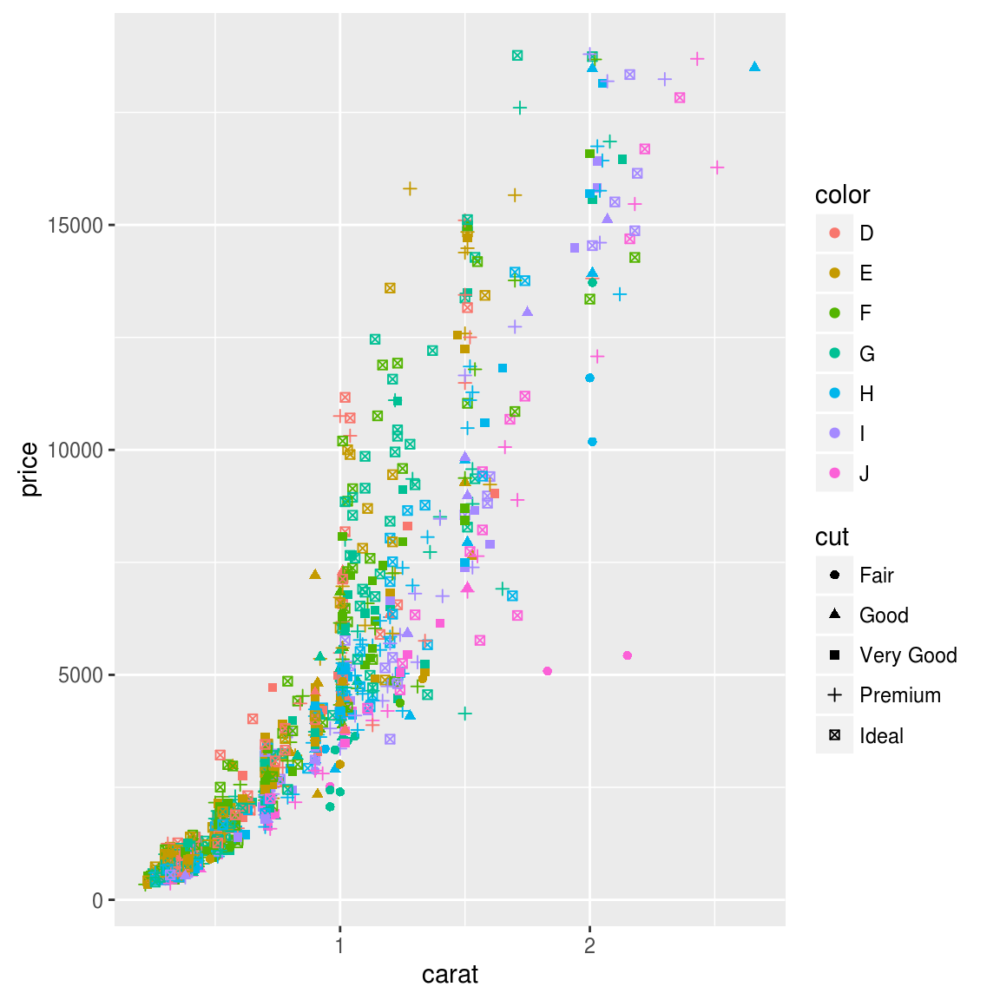
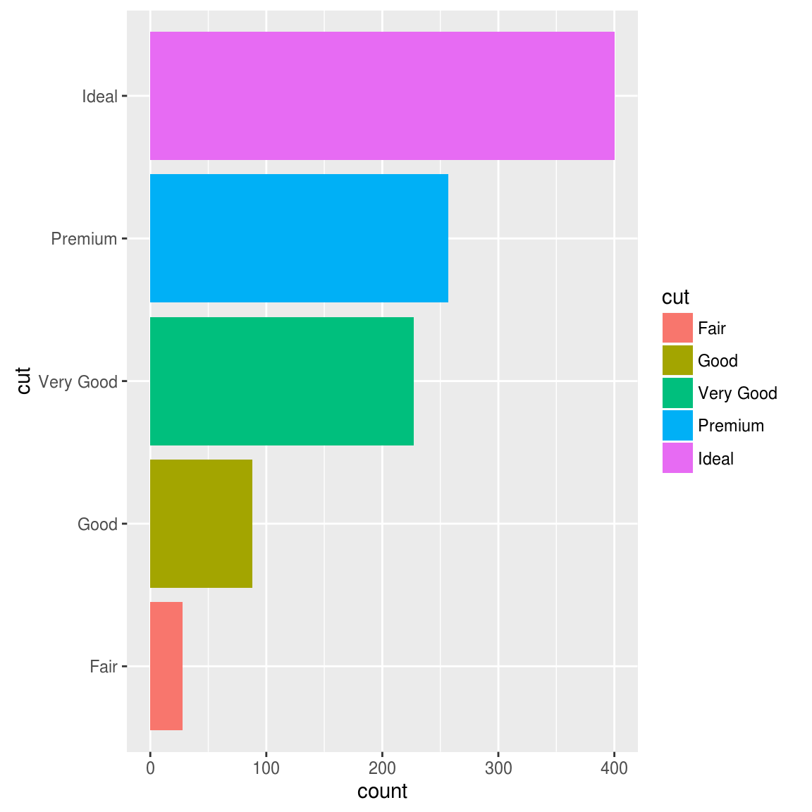
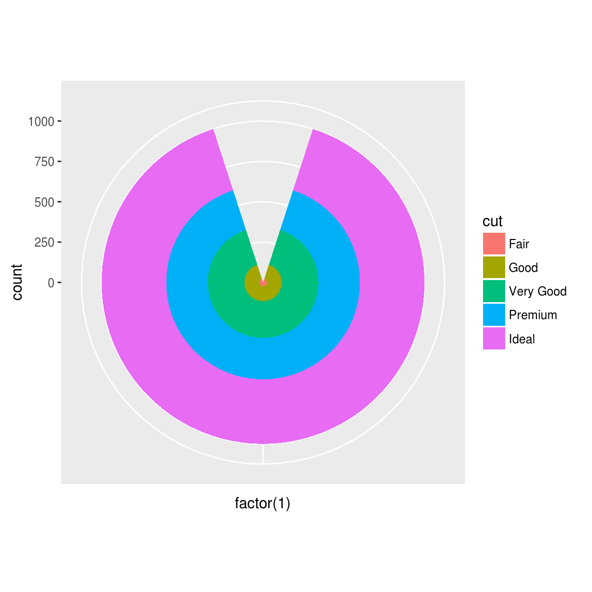

3 使用ggplot2画图
3.1 Why use ggplot2
ggplot2是我见过最human friendly的画图软件，这得益于Leland Wilkinson在他的著作《The Grammar of Graphics》中提出了一套图形语法，把图形元素抽象成可以自由组合的成分，Hadley Wickham把这套想法在R中实现。
为什么要学习ggplot2，可以参考ggplot2: 数据分析与图形艺术的序言（btw: 在序言的最后，我被致谢了）。
Hadley Wickham也给出一堆理由让我们说服自己，我想再补充一点，Hadley Wickham是学医出身的，做为学生物出身的人有什么理由不支持呢:)
3.2 ggplot2基本要素
- 数据（Data）和映射（Mapping）
- 几何对象（Geometric）
- 标尺（Scale）
- 统计变换（Statistics）
- 坐标系统（Coordinante）
- 图层（Layer）
- 分面（Facet）
- 主题（Theme）
这里将从这些基本要素对ggplot2进行介绍。
3.3 数据（Data）和映射（Mapping)
下面以一份钻石的数据为例，这份数据非常大，随机取一个子集来画图。
require(ggplot2)## Loading required package: ggplot2##
## Attaching package: 'ggplot2'## The following objects are masked from 'package:psych':
##
## %+%, alphadata(diamonds)
set.seed(42)
small<-diamonds[sample(nrow(diamonds),1000),]
head(small)## carat cut color clarity depth table price x y z
## 49345 0.71 Very Good H SI1 62.5 60 2096 5.68 5.75 3.57
## 50545 0.79 Premium H SI1 61.8 59 2275 5.97 5.91 3.67
## 15434 1.03 Ideal F SI1 62.4 57 6178 6.48 6.44 4.03
## 44792 0.50 Ideal E VS2 62.2 54 1624 5.08 5.11 3.17
## 34614 0.27 Ideal E VS1 61.6 56 470 4.14 4.17 2.56
## 27998 0.30 Premium E VS2 61.7 58 658 4.32 4.34 2.67summary(small)## carat cut color clarity depth
## Min. :0.2200 Fair : 28 D:121 SI1 :258 Min. :55.20
## 1st Qu.:0.4000 Good : 88 E:186 VS2 :231 1st Qu.:61.00
## Median :0.7100 Very Good:227 F:164 SI2 :175 Median :61.80
## Mean :0.8187 Premium :257 G:216 VS1 :141 Mean :61.71
## 3rd Qu.:1.0700 Ideal :400 H:154 VVS2 : 91 3rd Qu.:62.50
## Max. :2.6600 I:106 VVS1 : 67 Max. :72.20
## J: 53 (Other): 37
## table price x y
## Min. :50.10 Min. : 342.0 Min. :3.850 Min. :3.840
## 1st Qu.:56.00 1st Qu.: 989.5 1st Qu.:4.740 1st Qu.:4.758
## Median :57.00 Median : 2595.0 Median :5.750 Median :5.775
## Mean :57.43 Mean : 4110.5 Mean :5.787 Mean :5.791
## 3rd Qu.:59.00 3rd Qu.: 5495.2 3rd Qu.:6.600 3rd Qu.:6.610
## Max. :65.00 Max. :18795.0 Max. :8.830 Max. :8.870
##
## z
## Min. :2.330
## 1st Qu.:2.920
## Median :3.550
## Mean :3.572
## 3rd Qu.:4.070
## Max. :5.580
## 画图实际上是把数据中的变量映射到图形属性上。以克拉(carat)数为X轴变量，价格(price)为Y轴变量。
p <- ggplot(data=small, mapping=aes(x=carat, y=price))上面这行代码把数据映射XY坐标轴上，需要告诉ggplot2，这些数据要映射成什么样的几何对象，下面以散点为例：
p+geom_point()几何对象将在下面的小节介绍，这一节，关注的是数据和图形属性之间的映射。
如果想将切工（cut）映射到形状属性。只需要：
p <- ggplot(data=small, mapping=aes(x=carat, y=price, shape=cut))
p+geom_point()再比如我想将钻石的颜色（color）映射颜色属性：
p <- ggplot(data=small, mapping=aes(x=carat, y=price, shape=cut, colour=color))
p+geom_point()
3.4 几何对象（Geometric）
在上面的例子中，各种属性映射由ggplot函数执行，只需要加一个图层，使用geom_point()告诉ggplot要画散点，于是所有的属性都映射到散点上。
geom_point()完成的就是几何对象的映射，ggplot2提供了各种几何对象映射，如geom_histogram用于直方图，geom_bar用于画柱状图，geom_boxplot用于画箱式图等等。
不同的几何对象，要求的属性会有些不同，这些属性也可以在几何对象映射时提供，比如上一图，也可以用以下语法来画：
p <- ggplot(small)
p+geom_point(aes(x=carat, y=price, shape=cut, colour=color))ggplot2支持图层，我通常把不同的图层中共用的映射提供给ggplot函数，而某一几何对象才需要的映射参数提供给geom_xxx函数。
这一小节我们来看一下各种常用的几何对象。
3.4.1 直方图
直方图最容易，提供一个x变量，画出数据的分布。
ggplot(small)+geom_histogram(aes(x=price))## `stat_bin()` using `bins = 30`. Pick better value with `binwidth`.同样可以根据另外的变量给它填充颜色，比如按不同的切工：
ggplot(small)+geom_histogram(aes(x=price, fill=cut))## `stat_bin()` using `bins = 30`. Pick better value with `binwidth`.也可以将其分开，side-by-side地画直方图。
ggplot(small)+geom_histogram(aes(x=price, fill=cut), position="dodge")## `stat_bin()` using `bins = 30`. Pick better value with `binwidth`.还可以使用position=“fill”，按照相对比例来画。
ggplot(small)+geom_histogram(aes(x=price, fill=cut), position="fill")## `stat_bin()` using `bins = 30`. Pick better value with `binwidth`.### 柱状图 柱状图非常适合于画分类变量。在这里以透明度（clarity）变量为例。按照不同透明度的钻石的数目画柱状图。
ggplot(small)+geom_bar(aes(x=clarity))柱状图两个要素，一个是分类变量，一个是数目，也就是柱子的高度。数目在这里不用提供，因为ggplot2会通过x变量计算各个分类的数目。
当然你想提供也是可以的，通过stat参数，可以让geom_bar按指定高度画图，比如以下代码：
ggplot()+geom_bar(aes(x=c(LETTERS[1:3]),y=1:3), stat="identity")柱状图和直方图是很像的，直方图把连续型的数据按照一个个等长的分区（bin）来切分，然后计数，画柱状图。而柱状图是分类数据，按类别计数。我们可以用前面直方图的参数来画side-by-side的柱状图，填充颜色或者按比例画图，它们是高度一致的。
柱状图是用来表示计数数据的，但在生物界却被经常拿来表示均值，加上误差来表示数据分布，这可以通常图层来实现，我将在图层一节中给出实例。
3.4.2 密度函数图
说到直方图，就不得不说密度函数图，数据和映射和直方图是一样的，唯一不同的是几何对象，geom_histogram告诉ggplot要画直方图，而geom_density则说我们要画密度函数图，在我们熟悉前面语法的情况下，很容易画出：
ggplot(small)+geom_density(aes(x=price, colour=cut))ggplot(small)+geom_density(aes(x=price,fill=clarity))colour参数指定的是曲线的颜色，而fill是往曲线下面填充颜色。
3.4.3 箱式图
数据量比较大的时候，用直方图和密度函数图是表示数据分布的好方法，而在数据量较少的时候，比如很多的生物实验，很多时候大家都是使用柱状图+errorbar的形式来表示，不过这种方法的信息量非常低，被Nature Methods吐槽，这种情况推荐使用boxplot。
ggplot(small)+geom_boxplot(aes(x=cut, y=price,fill=color))geom_boxplot将数据映射到箱式图上，上面的代码，我们应该很熟悉了，按切工(cut)分类，对价格(price)变量画箱式图，再分开按照color变量填充颜色。
ggplot2提供了很多的geom_xxx函数，可以满足我们对各种图形绘制的需求。
geom_abline geom_area
geom_bar geom_bin2d
geom_blank geom_boxplot
geom_contour geom_crossbar
geom_density geom_density2d
geom_dotplot geom_errorbar
geom_errorbarh geom_freqpoly
geom_hex geom_histogram
geom_hline geom_jitter
geom_line geom_linerange
geom_map geom_path
geom_point geom_pointrange
geom_polygon geom_quantile
geom_raster geom_rect
geom_ribbon geom_rug
geom_segment geom_smooth
geom_step geom_text
geom_tile geom_violin
geom_vline3.5 标尺（Scale）
前面我们已经看到了，画图就是在做映射，不管是映射到不同的几何对象上，还是映射各种图形属性。这一小节介绍标尺，在对图形属性进行映射之后，使用标尺可以控制这些属性的显示方式，比如坐标刻度，可能通过标尺，将坐标进行对数变换；比如颜色属性，也可以通过标尺，进行改变。
ggplot(small)+geom_point(aes(x=carat, y=price, shape=cut, colour=color))+scale_y_log10()+scale_colour_manual(values=rainbow(7))以数据（Data）和映射（Mapping)一节中所画散点图为例，将Y轴坐标进行log10变换，再自己定义颜色为彩虹色。
3.6 统计变换（Statistics）
统计变换对原始数据进行某种计算，然后在图上表示出来，例如对散点图上加一条回归线。
ggplot(small, aes(x=carat, y=price))+geom_point()+scale_y_log10()+stat_smooth()这里就不按颜色、切工来分了，不然ggplot会按不同的分类变量分别做回归，图就很乱，如果我们需要这样做，我们可以使用分面，这个将在后面介绍。
这里，aes所提供的参数，就通过ggplot提供，而不是提供给geom_point，因为ggplot里的参数，相当于全局变量，geom_point()和stat_smooth()都知道x,y的映射，如果只提供给geom_point()，则相当于是局部变量，geom_point知道这种映射，而stat_smooth不知道，当然你再给stat_smooth也提供x,y的映射，不过共用的映射，还是提供给ggplot好。
ggplot2提供了多种统计变换方式：
stat_abline stat_contour stat_identity stat_summary
stat_bin stat_density stat_qq stat_summary2d
stat_bin2d stat_density2d stat_quantile stat_summary_hex
stat_bindot stat_ecdf stat_smooth stat_unique
stat_binhex stat_function stat_spoke stat_vline
stat_boxplot stat_hline stat_sum stat_ydensity统计变换是非常重要的功能，我们可以自己写函数，基于原始数据做某种计算，并在图上表现出来，也可以通过它改变geom_xxx函数画图的默认统计参数。 比如我在Proteomic investigation of the interactome of FMNL1 in hematopoietic cells unveils a role in calcium-dependent membrane plasticity的图一中，就把boxplot的中位线替换成了平均值来作图。
3.7 坐标系统（Coordinante）
坐标系统控制坐标轴，可以进行变换，例如XY轴翻转，笛卡尔坐标和极坐标转换，以满足我们的各种需求。
坐标轴翻转由coord_flip()实现
ggplot(small)+geom_bar(aes(x=cut, fill=cut))+coord_flip()
而转换成极坐标可以由coord_polar()实现：
ggplot(small)+geom_bar(aes(x=factor(1), fill=cut))+coord_polar(theta="y")这也是为什么之前介绍常用图形画法时没有提及饼图的原因，饼图实际上就是柱状图，只不过是使用极坐标而已，柱状图的高度，对应于饼图的弧度，饼图并不推荐，因为人类的眼睛比较弧度的能力比不上比较高度（柱状图）。
还可以画靶心图：
ggplot(small)+geom_bar(aes(x=factor(1), fill=cut))+coord_polar() 以及风玫瑰图(windrose)
ggplot(small)+geom_bar(aes(x=clarity, fill=cut))+coord_polar()3.8 图层（Layer）
photoshop流行的原因在于PS 3.0时引入图层的概念，ggplot的牛B之处在于使用+号来叠加图层，这堪称是泛型编程的典范。 在前面散点图上，我们已经见识过，加上了一个回归线拟合的图层。
在RT-PCR统计分析中，我使用geom_bar()画了一个柱状图，再使用geom_errorbar()画了标准误，两个图层一叠加，就成了我们常画的加了errorbar的柱状图。
有了图层的概念，使用ggplot画起图来，就更加得心应手。
做为图层的一个很好的例子是蝙蝠侠logo，batman logo由6个函数组成，在下面的例子中，我先画第一个函数，之后再加一个图层画第二个函数，不断重复这一过程，直到六个函数全部画好。
require(grid)## Loading required package: gridrequire(ggplot2)
f1 <- function(x) {
y1 <- 3*sqrt(1-(x/7)^2)
y2 <- -3*sqrt(1-(x/7)^2)
y <- c(y1,y2)
d <- data.frame(x=x,y=y)
d <- d[d$y > -3*sqrt(33)/7,]
return(d)
}
x1 <- c(seq(3, 7, 0.001), seq(-7, -3, 0.001))
d1 <- f1(x1)
p1 <- ggplot(d1,aes(x,y)) + geom_point(color="red") +xlab("") + ylab("") + theme_bw()
x2 <- seq(-4,4, 0.001)
y2 <- abs(x2/2)-(3*sqrt(33)-7)*x2^2/112-3 + sqrt(1-(abs(abs(x2)-2)-1)^2)
d2 <- data.frame(x2=x2, y2=y2)
p2 <- p1 + geom_point(data=d2, aes(x=x2,y=y2), color="yellow")
x3 <- c(seq(0.75,1,0.001), seq(-1,-0.75,0.001))
y3 <- 9-8*abs(x3)
d3 <- data.frame(x3=x3, y3=y3)
p3 <- p2+geom_point(data=d3, aes(x=x3,y=y3), color="green")
x4 <- c(seq(0.5,0.75,0.001), seq(-0.75,-0.5,0.001))
y4 <- 3*abs(x4)+0.75
d4 <- data.frame(x4=x4,y4=y4)
p4 <- p3+geom_point(data=d4, aes(x=x4,y=y4), color="steelblue")
x5 <- seq(-0.5,0.5,0.001)
y5 <- rep(2.25,length(x5))
d5 <- data.frame(x5=x5,y5=y5)
p5 <- p4+geom_point(data=d5, aes(x=x5,y=y5))
x6 <- c(seq(-3,-1,0.001), seq(1,3,0.001))
y6 <- 6 * sqrt(10)/7 +
(1.5 - 0.5 * abs(x6)) * sqrt(abs(abs(x6)-1)/(abs(x6)-1)) -
6 * sqrt(10) * sqrt(4-(abs(x6)-1)^2)/14
d6 <- data.frame(x6=x6,y6=y6)
p6 <- p5+geom_point(data=d6,aes(x=x6,y=y6), colour="blue")
multiplot <- function (..., plotlist = NULL, cols = 1, layout = NULL) {
plots <- c(list(...), plotlist)
numPlots = length(plots)
if (is.null(layout)) {
layout <- matrix(seq(1, cols * ceiling(numPlots/cols)),
ncol = cols, nrow = ceiling(numPlots/cols))
}
if (numPlots == 1) {
print(plots[[1]])
}
else {
grid.newpage()
pushViewport(viewport(layout = grid.layout(nrow(layout),
ncol(layout))))
for (i in 1:numPlots) {
matchidx <- as.data.frame(which(layout == i, arr.ind = TRUE))
print(plots[[i]], vp = viewport(layout.pos.row = matchidx$row,
layout.pos.col = matchidx$col))
}
}
}
multiplot(p1,p2,p3,p4,p5,p6, cols=2)## Warning: Removed 2 rows containing missing values (geom_point).3.9 分面（Facet）
在《ggplot2: 数据分析与图形艺术》一书的翻译中，一开始译者把facet翻译成切片，我在校稿的时候发现了，给他们写信，推荐翻译成分面，如果是slice这个词，翻译成切片倒是很精准，BSD的硬盘分区就叫slice，但facet从词源上看就是小脸的意思，翻译成分面才到位。给他们写信的时候，我还专门查了CNKI翻译助手，发现这词在信息学中，翻成分面早已是固定的。我感觉这是我对这本书翻译的最大贡献，校稿过程中发现的少量小问题远比不上这个关键词意思的把握上。
分面可以让我们按照某种给定的条件，对数据进行分组，然后分别画图。 在统计变换一节中，提到如果按切工分组作回归线，显然图会很乱，有了分面功能，我们可以分别作图。
ggplot(small, aes(x=carat, y=price))+geom_point(aes(colour=cut))+scale_y_log10() +facet_wrap(~cut)+stat_smooth()3.10 主题（Theme）
通过ggplot画图之后，我们可能还需要对图进行定制，像title, xlab, ylab这些高频需要用到的，自不用说，ggplot2提供了ggtitle(), xlab()和ylab()来实现。 比如：
p <- ggplot(small)+geom_boxplot(aes(x=cut, y=price,fill=color))
p + ggtitle("Price vs Cut")+xlab("Cut")+ylab("Price")但是这个远远满足不了需求，我们需要改变字体，字体大小，坐标轴，背景等各种元素，这需要通过theme()函数来完成。
ggplot2提供一些已经写好的主题，比如theme_grey()为默认主题，我经常用的theme_bw()为白色背景的主题，还有theme_classic()主题，和R的基础画图函数较像。
别外ggthemes包提供了一些主题可供使用，包括：
theme_economist theme_economist_white
theme_wsj theme_excel
theme_few theme_foundation
theme_igray theme_solarized
theme_stata theme_tufterequire(ggthemes)## Loading required package: ggthemesp + theme_wsj()在2013年发表的文章Putative cobalt- and nickel-binding proteins and motifs in Streptococcus pneumoniae中的图3就是使用theme_stata来画的。
至于如何改变这些元素，我觉得我之前画囧字的博文可以做为例子：
f <- function(x) 1/(x^2-1)
x <- seq(-3,3, by=0.001)
y <- f(x)
d <- data.frame(x=x,y=y)
p <- ggplot()
p <- p+geom_rect(fill = "white",color="black",size=3,
aes(NULL, NULL,xmin=-3, xmax=3,
ymin=-3,ymax=3, alpha=0.1))
p <- p + geom_line(data=d, aes(x,y), size=3)+ylim(-3,3)
theme_null <- function() {
theme_bw() %+replace%
theme(axis.text.x=element_blank(),
axis.text.y=element_blank(),
legend.position="none",
panel.grid.minor=element_blank(),
panel.grid.major=element_blank(),
panel.background=element_blank(),
axis.ticks=element_blank(),
panel.border=element_blank())
}
p+theme_null()+xlab("")+ylab("")详细的说明，可以参考?theme的帮助文档。
3.11 二维密度图
在这个文档里，为了作图方便，我们使用diamonds数据集的一个子集，如果使用全集，数据量太大，画出来散点就糊了，这种情况可以使用二维密度力来呈现。
ggplot(diamonds, aes(carat, price))+ stat_density2d(aes(fill = ..level..), geom="polygon")+ scale_fill_continuous(high='darkred',low='darkgreen')3.12 ggplot2实战
蝴蝶图，详见《Modern Applied Statistics with S-PLUS》第一章。
theta <- seq(0,24*pi, len=2000)
radius <- exp(cos(theta)) - 2*cos(4*theta) + sin(theta/12)^5
dd <- data.frame(x=radius*sin(theta), y=radius*cos(theta))
ggplot(dd, aes(x, y))+geom_path()+theme_null()+xlab("")+ylab("")这个图，我想展示的是对细节的修改上，在画囧字的时候，把画布上的元素都给清楚了，我把它定义为theme_null主题，在这里，直接应用，我们可以形成自己的画图风格，并写出自己的主题函数固定下来。
最后以生物界中常用的柱状图+误差图为实例，展示ggplot2非常灵活的图层。以我2011年发表的文章Phosphoproteome profile of human lung cancer cell line A549中的westernblot数据为例。这个实例展示了图层，标尺，主题，注释和各种细节微调多种元素。
Normal <- c(0.83, 0.79, 0.99, 0.69)
Cancer <- c(0.56, 0.56, 0.64, 0.52)
m <- c(mean(Normal), mean(Cancer))
s <- c(sd(Normal), sd(Cancer))
d <- data.frame(V=c("Normal", "Cancer"), mean=m, sd=s)
d$V <- factor(d$V, levels=c("Normal", "Cancer"))
p <- ggplot(d, aes(V, mean, fill=V, width=.5))
p <- p+geom_errorbar(aes(ymin=mean, ymax=mean+sd, width=.2),
position=position_dodge(width=.8))
p <- p + geom_bar(stat="identity", position=position_dodge(width=.8), colour="black")
p <- p + scale_fill_manual(values=c("grey80", "white"))
p <- p + theme_bw() +theme(legend.position="none") + xlab("") + ylab("")
p <- p + theme(axis.text.x = element_text(face="bold", size=12),
axis.text.y = element_text(face="bold", size=12))
p <- p+scale_y_continuous(expand=c(0,0), limits=c(0, 1.2), breaks=seq(0, 1.2, by=.2))
p <- p+geom_segment(aes(x=1, y=.98, xend=1, yend=1.1))
p <- p+geom_segment(aes(x=2, y=.65, xend=2, yend=1.1))
p <- p+geom_segment(aes(x=1, y=1.1, xend=2, yend=1.1))
p <- p + annotate("text", x=1.5, y=1.08, label="*")
print(p)更多实例，可以参考我使用ggplot2实现<25 Recipes for Getting Started with R>一书中的所有图片.
2013-05-18